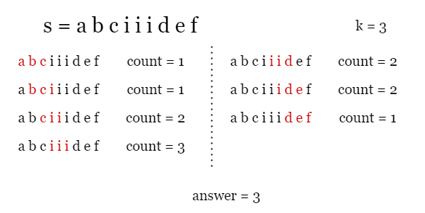
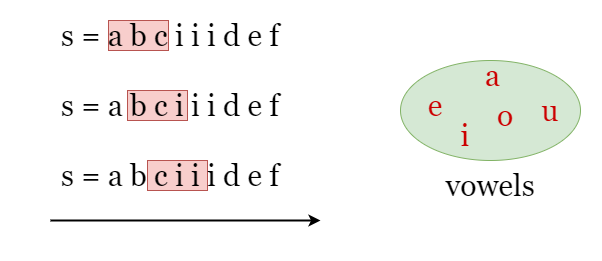
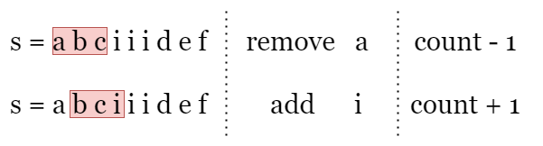

As shown in the picture below, given s = abciiidef and k = 3, we can find all substrings of
length k = 3 and count the number of vowel letters in each of them.

We can use a sliding window to solve this problem. The term "subarray of length k" in the problem is actually
equivalent to "window of length k". Since the length of the window (substring) is fixed as k, we only
need to create a window at the leftmost side of the string s, and move it one character to the right
each time. This way, the window can cover all subarrays of length k. Then, we simply count the number
of vowels in each window and record the maximum count according to the requirement. As shown in the picture below,
the window of length 3 is represented by the red box.

The problem is that if we count the number of vowels in each window by iteration every time, it would result in a
time complexity of O(length_of_s⋅k)O(\text{length\_of\_s}\cdot k)
which could be expensive. However, by observation, we can see that two adjacent windows only differ by two
characters. When we move the index of the right boundary of the window from i - 1 to i,
only one character is added to the window while one is removed, Therefore, we can represent the new window by
keeping track of the changes between adjacent windows
Let
countbe the number of vowels in the current window[i - k, i - 1]. If we move the window one character to the right as[i - k + 1, i].
- If the newly added character
s[i]is a vowel, we increasecountby 1.- If the newly removed character
s[i - k]is a vowel, we reducecountby 1.

That's it. While moving the window, we keep track of the changes between adjacent windows and count the number of
vowels count in the current window as shown above, and update answer as the maximum count
we have encountered.
Build a hash set vowels that contains all 5 vowel letters, initialize answer as 0.
Record the number of vowel letters in the first k letters as count.
Now we move the "window" to the right, let i be the index of its right boundary:
s[i] is in vowels, increment count by 1.s[i - k] is in vowels, reduce count by 1.answer as the maximum count we have encountered.Return answer after the iteration ends.
Java
class Solution {
public int maxVowels(String s, int k) {
Set vowels = Set.of('a', 'e', 'i', 'o', 'u');
// Build the window of size k, count the number of vowels it contains.
int count = 0;
for (int i = 0; i < k; i++) {
count += vowels.contains(s.charAt(i)) ? 1 : 0;
}
int answer = count;
// Slide the window to the right, focus on the added character and the
// removed character and update "count". Record the largest "count".
for (int i = k; i < s.length(); i++) {
count += vowels.contains(s.charAt(i)) ? 1 : 0;
count -= vowels.contains(s.charAt(i - k)) ? 1 : 0;
answer = Math.max(answer, count);
}
return answer;
}
}
C++
class Solution {
public:
int maxVowels(string s, int k) {
unordered_set vowels{'a', 'e', 'i', 'o', 'u'};
// Build the window of size k, count the number of vowels it contains.
int count = 0;
for (int i = 0; i < k; i++) {
count += vowels.count(s[i]);
}
int answer = count;
// Slide the window to the right, focus on the added character and the
// removed character and update "count". Record the largest "count".
for (int i = k; i < s.length(); i++) {
count += vowels.count(s[i]) - vowels.count(s[i - k]);
answer = max(answer, count);
}
return answer;
}
};
Python3
class Solution:
def maxVowels(self, s: str, k: int) -> int:
vowels = {'a', 'e', 'i', 'o', 'u'}
# Build the window of size k, count the number of vowels it contains.
count = 0
for i in range(k):
count += int(s[i] in vowels)
answer = count
# Slide the window to the right, focus on the added character and the
# removed character and update "count". Record the largest "count".
for i in range(k, len(s)):
count += int(s[i] in vowels)
count -= int(s[i - k] in vowels)
answer = max(answer, count)
return answer
Let nn
be the length of the input string s.
Time complexity: O(n)O(n)
s.vowels, which takes constant time.
Space complexity: O(1)O(1)
count and answer, which takes O(1)O(1) space.
vowels contains 5 vowel letters which takes O(1)O(1) space.